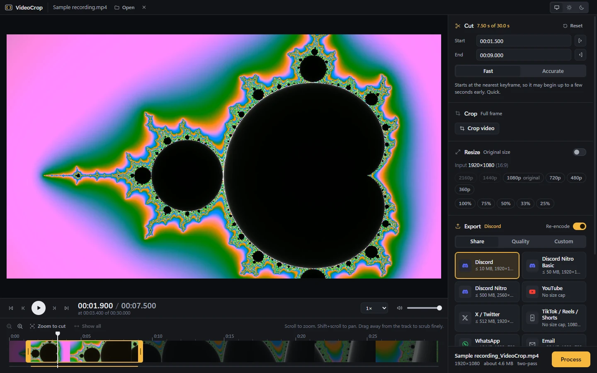

Cut timeline
Find the moment in a long recording without fighting the scrubber.
- timeline
- Zoomable, with a filmstrip
- scrub
- Drag away from the track to slow down
- times
- Type start and end exactly
- mode
- Frame-accurate, or instant keyframe cuts
Cut, crop and compress any video on Windows, including the three-hour OBS recording nothing else will open.
Download for Windowsv3.0.0 · x64 · 2.0 MBWindows 10 and 11 · x64 & ARM64

About the size of a photo.
The whole app, installed.
Opens before you look away.
Windows 10 and 11.
Plays everything
Every file is probed on open. Ones Windows can play go straight to the preview. HEVC, AV1 and odd MKVs get an on-demand stream: ffmpeg prepares a few seconds ahead of the playhead, on the GPU when there is one. Seek anywhere in a three-hour file and it just plays.
Windows decodes it. The preview reads the file as it is.
4-second segments, made just ahead of where you are watching.
Encoded from the original file, never from the preview.
Spec sheet
Find the moment in a long recording without fighting the scrubber.
Draw the crop on a full-resolution still and watch it apply live.
Scale the cropped frame down, never up.
One click per destination. Size caps are hit with two-pass encoding, and the resolution is chosen so the clip still looks good at that size.
Bars on a log scale, 1 MB to 1 GB.
Pick a codec preset, or set every number yourself.
Your videos never leave your PC. Everything runs on your machine with ffmpeg.
Free for Windows
About 2 MB to download. No account, nothing uploaded.
Download for Windowsv3.0.0 · x64 · 2.0 MBWindows 10 and 11 · Source on GitHub